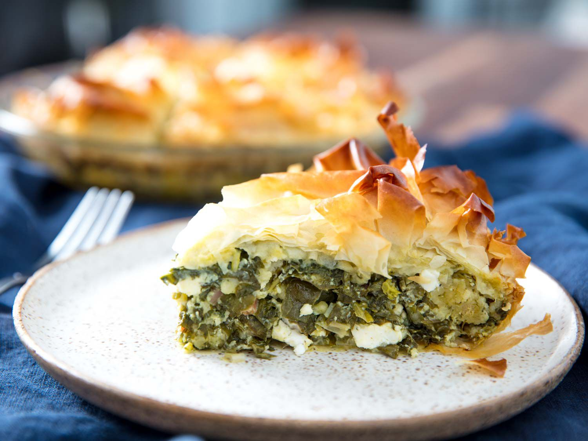

Spanakopita

Description
Spanakopita, a delicious savory Greek pie made of crispy phyllo dough and filled with spinach and feta cheese.
Ingredients
- Chopped Spinach
- Feta Cheese
- Eggs
- Dill Weed
- Parsley
- Onions
- Phyllo Dough
Steps
- Mix filling ingredients in a large bowl.
- Line baking sheet with phyllo dough.
- Evenly spread filling into sheet, then layer with more phyllo dough.
- Bake in 325o oven for 1 hour, until crispy and golden brown.
Return to Top